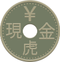
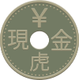

Instruction :
Même si ces règles été créer pour l'utilisation du jeu présenté dans la page précédente, il n'y a rien qui vou empêche de jouer à ce jeux autrement. Par exemple, vous pourriez dessiner le plateau sur une feuille de papier et utiliser des pièces de monnaie et des boutons pour représenter les tigres et les chevres respectivement.Au début de la partie
- les 20 chèvres sont placées en réserves hors du plateau.
- les 4 jetons de tigres sont placé sur les noeuds situé à chaque coin du plateau.
Les chèvres jouent en premier, suivi des tigres. La partie continuera en alternant les tours des deux joueurs jusqu'à ce que l'un des joueurs gagne.

Comment déplacé un jeton?
Plusieurs fois durant la partie, il sera demandé de déplacé un jeton sur un autre noeuds. Un jeton peut se déplacé sur n'importe quelle noeuds adjacents si:
- il suit les traits entre le noeuds de départ et de fin.
- le noeud en question est vide.
Sur le plateau et les noeuds
Le plateau est composé de 25 noeuds placés en grille de 5 par 5. Les noeuds ont visuellement deux parties, le noyau et les traits qui sont placé autours:
-
Le noyau du noeuds est le cercle au centre de chaque. Si un jeton est placé sur un noeud, il sera placé sur ce cercle. *À aucun moment il peut y avoir plus qu'un jeton sur le noyau.
-
Les traits qui sont placé autours indiquent quelles noeuds est relié à lequelle. Ils déterminent dans quelle direction les jetons peuvent se déplacer lorsqu'ils sont dessus.
Durant le tour des chèvres
Pour les 20 premiers tours des chèvres, il sera impossible de déplacé les chèvres qui sont sur le plateau. À la place, le joueur devra placé une des chèvres de sa réserve sur le plateau. Cette chèvre peut être placé sur n'importe lequelle des noeuds vides sur le plateau.
Si, au début du tour, il n'y a plus de chèvres dans la réserve, alors le joueur pourra déplacé une de ses chèvres d'un noeuds.
Après avoir placé une chèvre sur le plateau ou déplacé une des chèvres, le tour finit.
Le but des chèvres est d'immobiliser tout les tigres avant que ceux si ne capture 5 chèvres
Durant le tour des Tigres

 

À chaque tour, le joueur qui joue les tigres devra déplacé un de ses tigres sur un des noeuds adjacents.
Les tigres peuvent capturer les chèvres adjacente en sautant par dessus ceux-si. Si l’espace qui est de l’autre côté de la chèvre désiré est disponible (il n’y a pas d’autre chèvre ou tigre et ce n’est pas en dehors du plateau). alors tu peut capturer la chèvre et déplacé le tigre sur le noeud après la chèvre. La chèvre est alors enlever du jeu et du plateau (il ne s’en va pas en réserve).
Après avoir déplacé un tigre, même lors d'une capture, son tour finit.
Les tigres gagnent au moment qu'ils ont réussi à éleminer un total de 5 chèvres mais ils doivent faire attention à ne pas être bloqué par les chèvres. Les tigres gagnent aussi si le joueur des chèvres ne peut rien faire lors de son tour.
Comment gagner
Le joueur qui joue les tigres gagne si il arrive à capturer 5 chèvres.
Si l’un des joueurs se retrouvent incapable d’agir au début de son tour, alors le joueur opposé gagne.